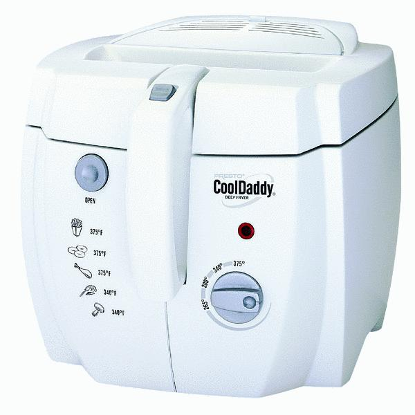

Cool Daddy Home Deep Fryer

Affordances
- Open button: Affords pressing. Releases the clip that holds the lid down on the top.
- Handle switch: Affords pushing forward. Allows you to close the lid then drop food to be cooked to avoid splatter.
- Dial: Affords turning and changing temperature to appropriate level.
- Basket: Affords placing and holder for food during and after cooking.
- Light: Affords user to be aware of status of appliance.
Constraints
- Basket: The size of the basket will allow only a certain amount of food to be placed inside.
- Temperature Guage: The dial will only allow the user to turn the temperature up to 375 Degrees F.
Mapping
- Open is labeled next to the button that opens the top of the appliance.
- There are general temeparture levels for what type of food you would like to cook on the left front side.
- The temperature dial is labeled with the higher temperatures.
Feedback
- Plugging it in will cause the light to turn on to indicate that the appliance is heating up.
- When the desired temperature has been reached, the light will turn off.
- Pressing the button to open the lid will open the top.
Coloring
- Solid coloring other than the buttons and moving parts that allow the appliance to work. This draws the user in and allows them to see what they should interface with.
User's Conceptual Model
- See the mapping of which food you would like to cook and decide what the appropriate temerature would be for what you want to cook.
- See temperature knob, turn it to the appropriate temperature.
- See the open button, open the lid and place food within the basket. After placing your food in the basket which is hovering over the food, realize there must be a way to drop the food into the oil. Notice the slider located on the top of the basket releases the lock. Close the lid and drop food into oil.
I would say that the user would utilize bottom-up processing for this item. Especially for people who do not know their way around the kitchen or are unfamiliar with a deep frier. The user would probably follow the pretty simple process as described above. Being that this is a quite simplistic appliance, I do not think that the paradox of technology would apply here. It is a very clean and simple way to use a deep frier. There are only a few buttons and an unfamiliar user could probably pick up use quite quickly
Design Critique
This clean design allows the user to quite easily and intuitively figure out all of the ins and outs of this appliance within minutes. Even faster for those who have seen one before. There are not many buttons to push or experiment with. Any of the buttons can be tested through trial and error while the appliance is off and it is safe.
The ability to keep the food above the oil before closing the lid and dropping the basket ensures safety in an average home. Overall a very simple and easy to use design.
Improvement
There is no on and off switch on this appliance, the only way to turn it off is by unplugging it. This may be a good thing for safety, however depending on the kitchen it's used in it may be a hassle